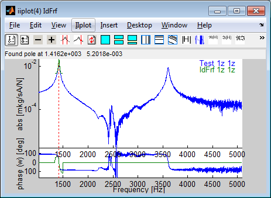
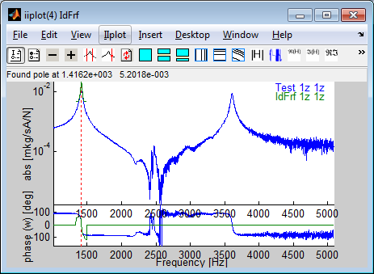

PDF Index
PDF Index|
Contents
Functions
PDF Index |
The project is continued using separate questions about parametric model reduction and links between test and analysis. The test case is now an drum brake plate, one which a cable guide (small relatively flat piece) is riveted. The vibrations of this cable guide lead to impacts between the cable and the guide which are audible and thus problematic.
One seeks to analyze the level of damping that can be introduced by introducing a viscoelastic glue at the cable-guide/plate junction. To analyze the potential of such a change, one generates a parametric model combining M the mass of the plate and the junction, Ke the elastic stiffness (glue not included), Kv the glue stiffness and Mg the mass of the cable guide. One then considers that the glue is viscoelastic with a loss factor η=1 and chooses a design parameter α corresponding the the adjustment of the glue modulus (technically α can be adjusted using a choice of material, thickness or surface). Computation of the complex modes is given by the parametric eigenvalue problem
| [(M+β Mg)λj2 + Ke + α (1+iη) Kv] {ψj} = {0} (4) |
The script below runs a design study
[ci,cf]=cc_simul('loadDBFE'); Up=cf.mdl.GetData;CE=fe_case(Up,'getcase');Up.Klab % the matrix labels m0=feutilb('sumkcoef',Up.K,[1 0 0 1]); k0= feutilb('sumkcoef',Up.K,[0 1 1 0]); d1=fe_eig({m0,k0,CE.T,Up.DOF},[5 25 1e3]); d2=fe_eig({feutilb('sumkcoef',Up.K,[1 0 0 1]), ... % what is done here ? feutilb('sumkcoef',Up.K,[0 1 .01 0]), ... CE.T,Up.DOF},[5 25 1e3]); d3=fe_eig({feutilb('sumkcoef',Up.K,[1 0 0 .01]), ... % what is done here ? feutilb('sumkcoef',Up.K,[0 1 1 0]), ... CE.T,Up.DOF},[5 25 1e3]); % Build reduced basis and model [T,fr]=fe_norm([d1.def d2.def d3.def],m0,k0); % why is fe_norm called ? SE=Up; SE.TR=struct('def',T,'DOF',SE.DOF,'data',fr/2/pi); SE.K=feutilb('tkt',SE.TR.def,Up.K); %% Compute poles as a function of alpha Range=logspace(-4,0,50)';def=[]; ceigopt=[1000 0 0 0 0 1e-8]; mcoef=1; for jpar=1:length(Range) mr=feutilb('sumkcoef',SE.K,[1 0 0 mcoef]); kr= feutilb('sumkcoef',SE.K,[0 1 Range(jpar)*(1+1i) 0]); dr=fe_ceig({mr,[],kr,(1:size(SE.K{1},1))'+.99},ceigopt); % merge for each design point i1=find(dr.data(:,1)>1); dr.data(:,3)=Range(jpar); def=fe_def('AppendDef',def,fe_def('subdef',dr,i1(1:15))); end hpo=reshape(def.data(:,1),15,[]); % Frequency history hpo(hpo>2500)=NaN; % don't display above 2500 Hz hda=reshape(def.data(:,2),15,[]); % Damping history figure(1);clf;subplot(121);semilogx(Range,hpo');axis('tight'); xlabel('Glue Coef');ylabel('Frequency [Hz]') subplot(122);plot(hpo',hda'*100,'+');axis tight xlabel('Frequency [Hz]'); ylabel('Damping ratio[%]'); % Display modes at a particular design point with interactive cursor def.LabFcn='sprintf(''%.0f Hz %.2f %%, alpha=%.2f'',def.data(ch,1:3).*[1 100 1])'; def.TR=SE.TR; cf.def=def; fecom('colordataevala -edgealpha.05 -alpha.2'); cc_simul('rangedatacursor'); % open cursors fecom('view4'); % relevant view
d1=fe_def('subdef',def,1:15);d1.name='Soft'; d2=fe_def('subdef',def,size(def.def,2)+[-14:0]);d2.name='Stiff'; d1f=d1;d1f.def=SE.TR.def*d1.def;d1f.DOF=SE.TR.DOF; d2f=d2;d2f.def=SE.TR.def*d2.def;d2f.DOF=SE.TR.DOF; % Pseudo mass associated with DOFs on brake plate ct=fe_c(d1f.DOF,feutil('getdof',feutil('findnode matid 1',SE),(1:3)'/100)); mp=ct'*ct; figure(11);ii_mac(d1f,d2f,'m',mp,'mac mplot');
ADDITIONAL QUESTIONS (but consider the next part fist).
A laser vibrometer test was performed with the objective of characterizing the plate. By following the procedure detailed in annex section 4.4 use the idcom interface to complete the partial identification given (your objective is to obtain a parametric model of the transfers). To start
% You can do close('all') here but not later %web(fullfile(fileparts(which('cc_simul'))),'html/tpCorrelDB.html');cd(tempdir); [ci,cg]=cc_simul('loadDBTest'); cg.def=ci.Stack('IdMain');cg.sel='-Test';fecom('showFiTestDef');
ci is an object pointing to iiplot figure and cf to the feplot figure. For more details, see the SDT documentation with sdtweb('diiplot').
fecom('imwrite',struct('ch',1:3,'Movie','Test.gif')) % Movies for modes (1:3)
To save your identification results, you only save your poles in a MATLAB script. A clean display in the command line is achieved with
idcom('TableIdMain')
idcom('wmin 0 2500') idcom('estFullBand'); Id1=ci.Stack{'IdMain'};Id1.name='Est???'; idcom('wmin 400 2500') idcom('estFullBand'); Id2=ci.Stack{'IdMain'};Id2.name='EstW???'; idcom('EstLocalPole'); Id3=ci.Stack{'IdMain'};Id3.name='EstLocalPole'; figure(1);subplot(121);ii_mac(Id1,Id2,'macplot');subplot(122);ii_mac(Id2,Id3,'macplot');
ADDITIONAL QUESTIONS (to be treated at the end or after lab work)
%% Basic implementation of identification XF1=ci.Stack{'Test'};XF1=fe_def('subdef',XF1,XF1.w>503&XF1.w<512); figure(1);semilogy(XF1.w,sum(abs(XF1.xf),2)); po=[]; for j1=1:size(XF1.xf,2) s=XF1.w*1i; H=XF1.xf(:,j1); A=[-s.*H -s.^2.*H ones(size(s)) s s.^2 ]; B=H; r1=[real(A);imag(A)]\[real(B);imag(B)]; ld=roots( ??? ); ld=ld(1); po(j1,:)=[-real(ld)./abs(ld) abs(ld)]; end figure(1);plot(po(:,1),po(:,2),'+')
%% Shape and SVD of frequency response XF1=ci.Stack{'Test'};XF1=fe_def('subdef',XF1,XF1.w>503&XF1.w<512); [u,s,v]=svd(XF1.xf.',0);s=diag(s); figure(12);plot(XF1.w,abs(v*diag(s))); du=struct('def',u,'DOF',XF1.dof(:,1),'data',s/s(1)); du.LabFcn='sprintf(''%i si/s1= %.4g'',ch,def.data(ch))'; cg.def=du; % Display shape figure(12);ii_mac(12,ci.Stack{'IdMain'},du,'MacTable')
Le script above loads data, builds the observation matrix, defines parameters and computes modes for two distinct values of these parameters. The MAC and the MAC/frequency-error table are then shown.
[ci,cf]=cc_simul('loadDBCorrel'); % d1=cf.def;ii_mac(1,'SetMac',struct('db',d1)) ii_mac(1,'SetMac',struct('da',ci.Stack{'IdMain'},'Pair','A','MacPlot','Do')) ii_mac(1,'macErrorTable');
La procedure uses a figure containing buttons (Ident tab) and a figure to display data (iiplot).
 

More details on this process are given in the SDT manual (sdtweb('dockid#idprocess')).